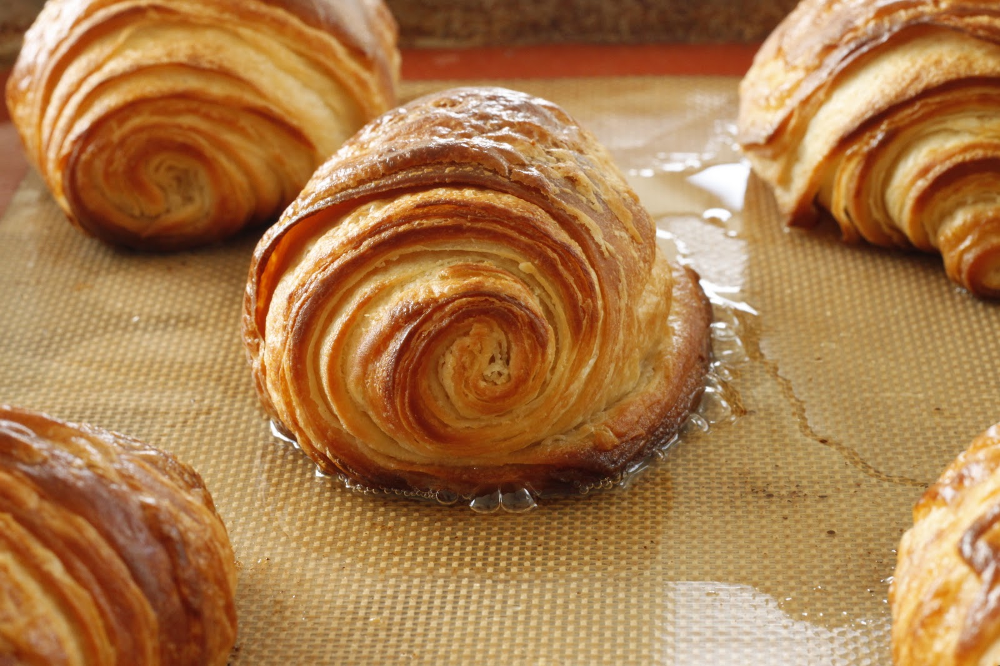
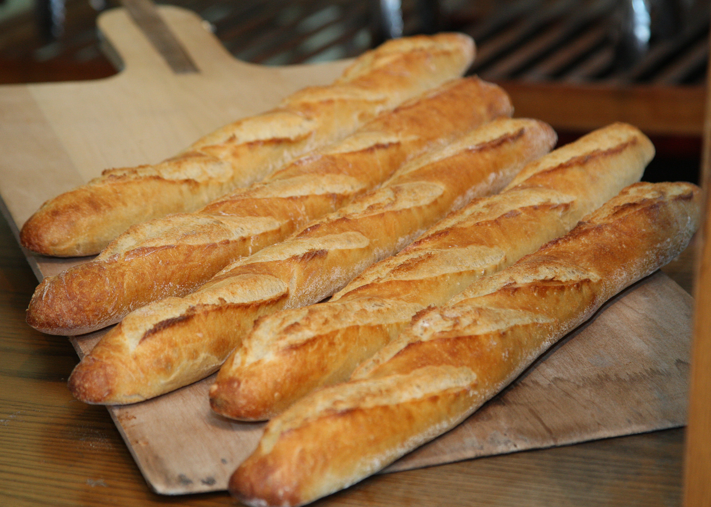
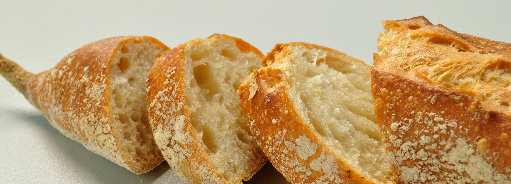

HOME
Boulangerie HAL
フランス オーベルニュ地方の伝統パンや郷土料理の惣菜パンなどを販売するオーベルニュ地方フェアを開催いたします。



NEWS
フランス オーベルニュ地方の伝統パンや郷土料理の惣菜パンなどを販売するオーベルニュ地方フェアを開催いたします。
-
2022年11月30日
フランス オーベルニュ地方の伝統パンや郷土料理の惣菜パンなどを販売するオーベルニュ地方フェアを開催いたします。
-
2022年11月16日
ご好評いただいておりますデザートに、季節限定でオレンジを使用したデザートが加わります。
-
2022年11月8日
名産ブルーチーズ「フルム・ダンベール」を使ったパンや、郷土料理をアレンジした惣菜パンなど、フェア限定商品をご用意しております。
ACCESS
Boulangerie HAL
住所：東京都渋谷区猿楽町29-18
電話：03-3344-1010t
東急東横線［代官山駅］下車 徒歩3分
東急東横線・地下鉄日比谷線［中目黒駅］下車 徒歩7分
JR山手線・JR埼京線・地下鉄日比谷線［恵比寿駅］下車 徒歩10分
営業時間
10:00～20:00